News
October 2026
• We were pleased to host Prof. Praveen Bollini from the University of Houston at Louisiana Tech University. He met with our faculty and students and delivered an excellent research seminar titled "Engineering Active Oxygens for Chemical Separations and Catalysis." Many thanks to Praveen for sharing his research and insights with our chemical engineering and catalysis community!
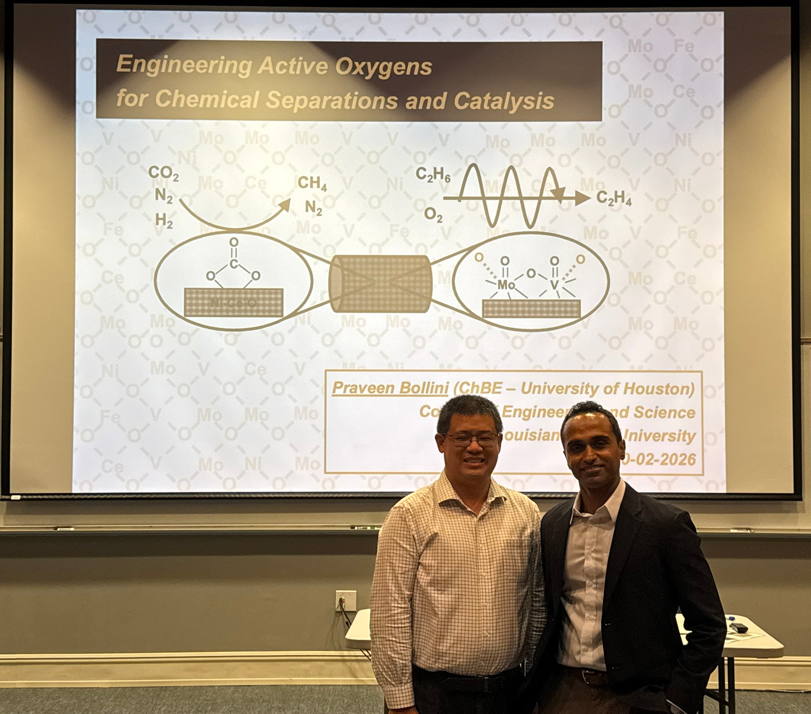
September 2026
• Congratulations to Dr. Tobias (Toby) Misicko on successfully defending his Ph.D. dissertation, "Catalytic Conversion of Shale Gas into Value-Added Chemicals and Fuels," on September 21, 2026! Toby is the first Ph.D. graduate from our research group at Louisiana Tech University. We are proud of his accomplishments and wish him continued success in his future endeavors!
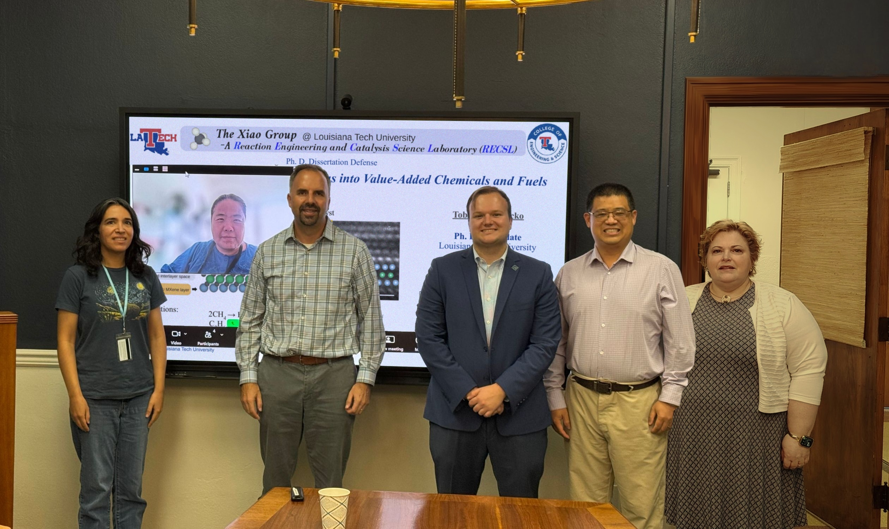
• We are pleased to host Prof. Matthew M. Montemore from Tulane University for his visit to Louisiana Tech University and research seminar titled: "Computational Design and Understanding of Metal Catalysts at the Atomic Scale"
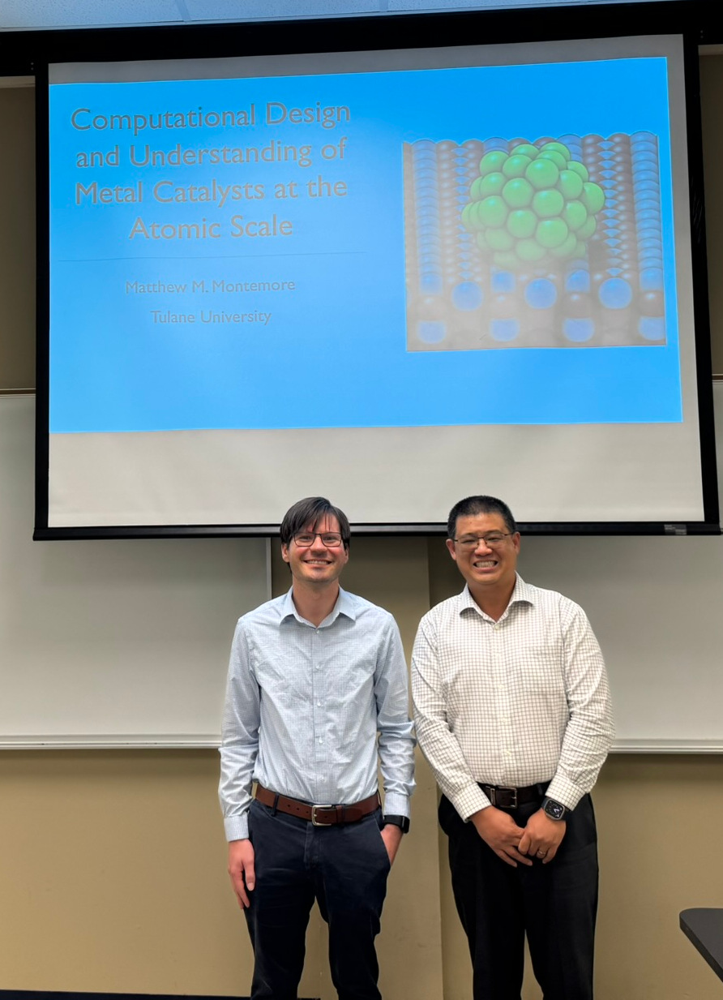
• Dr. Xiao receives the 2026 Virgil Orr Junior Faculty Award from Louisiana Tech University, recognizing his outstanding contributions to undergraduate teaching, research, and community/university service.
• Dr. Xiao receives the 2026 College of Engineering and Science Education Award for Senior Design Instructors, recognizing his contributions to undergraduate engineering education and senior capstone design.
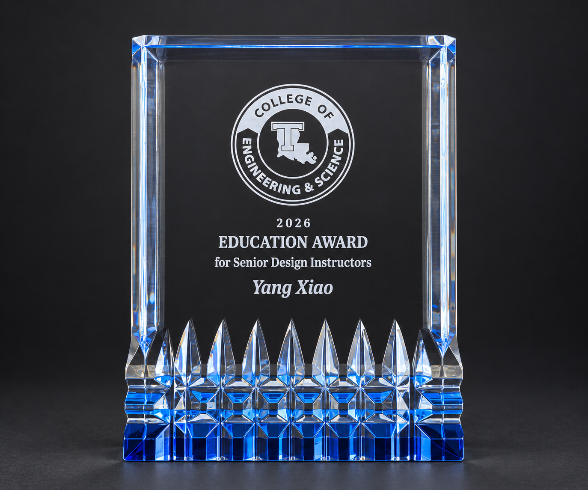
• Dr. Xiao receives the 2026 College of Engineering and Science Research Award as a member of the DARPA SMS and MICA Team, recognizing the team’s research contributions to the DARPA SMS and MICA programs.
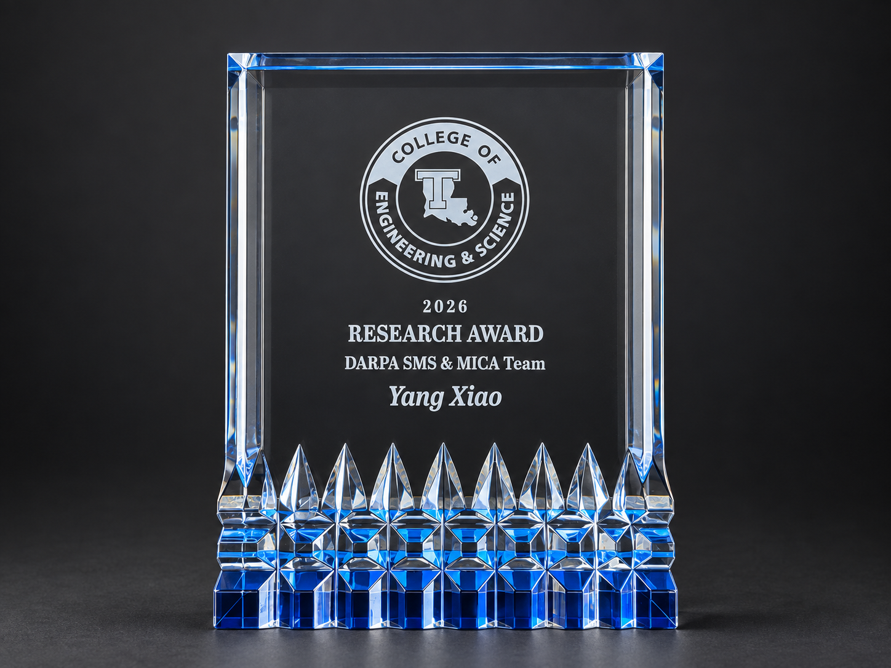
• Dr. Xiao has been elected as Secretary of the Southwest Catalysis Society. He looks forward to serving the catalysis community and working with colleagues across the region.
• We are pleased to welcome Dr. Jake Vu to the Xiao Group as a Postdoctoral Research Associate. Dr. Vu received his Ph.D. in Chemistry from Purdue University and brings expertise in DFT, machine-learning force fields (MLFF), and molecular dynamics (MD) simulations to the group.
August 2026
• Dr. Xiao gives a research seminar at Purdue University on Friday, August 28, 2026, highlighting one of the core research directions in the Xiao Group at Louisiana Tech University: methane activation via Selective Passivized Catalysis (SPC).
• Dr. Xiao receives the 2026 Rising Stars in Sustainability Award from Sustainability Science and Technology, recognizing his research on the selective hydrogenolysis of glycerol to 1,3-propanediol over bifunctional Pt/KIT-6 catalysts.
• Dr. Xiao co-organizes three C1 Catalysis sessions at the ACS Fall Meeting in Chicago, IL: Session 1, Session 2, and Session 3. Tobias Misicko from the Xiao Group presents "Selective Passivized Catalysis: Bridging the Gap for Low Temperature Methane Activation" at the meeting. View presentation details.
May 2026
• Congratulations to Joaquin Herrero on receiving 1st Place ($2,000) in the Outstanding COES Service, Leadership, and Engagement Awards.
• We are pleased to host Dr. Manish Shetty’s visit to Louisiana Tech University and his catalysis seminar titled: "Mechanistic Insights into Tandem Chemical Conversions"
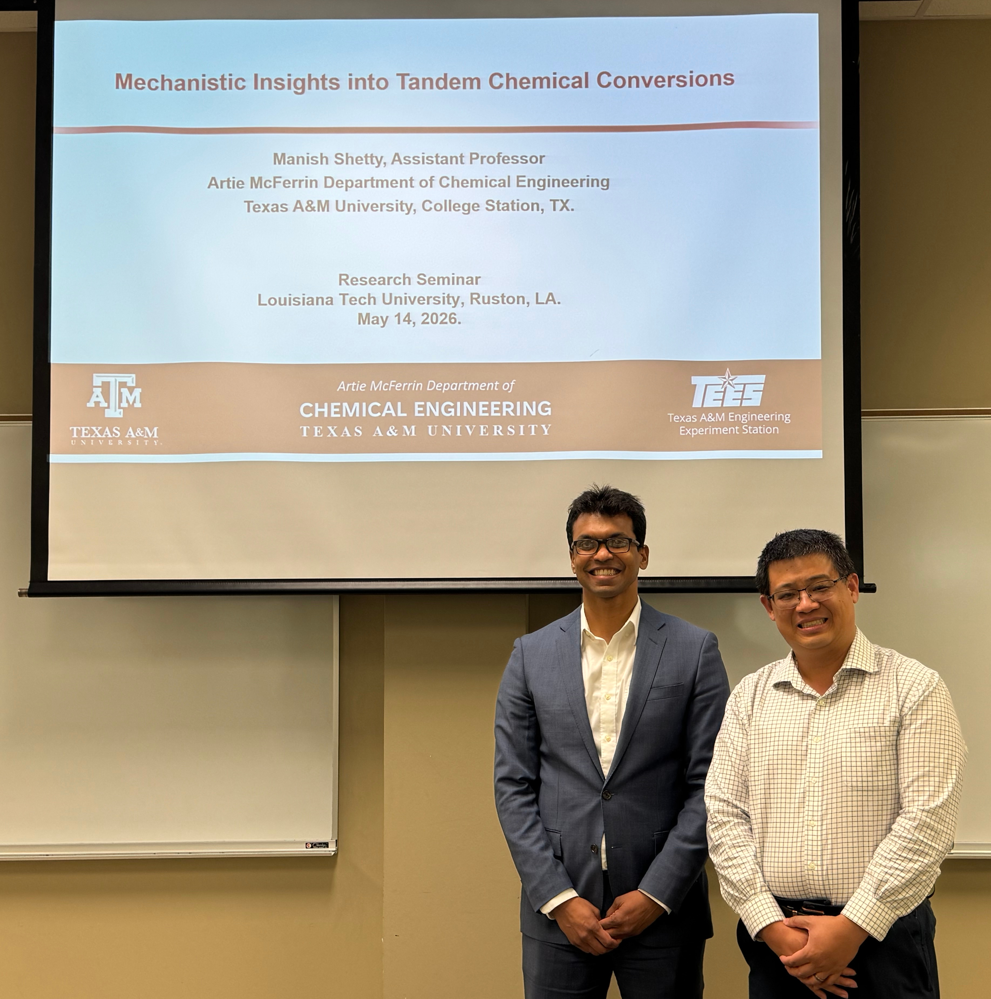
• Our paper "Selective hydrogenolysis of glycerol to 1,3-propanediol over bifunctional Pt/KIT-6 catalysts" is published in the journal of Sustainability Science and Technology, 3(2), 024006, 2026. We are pleased to participate in the Rising Stars in Sustainability collection. See PDF | Link.

• Congratulations to Jiaping Weng on receiving a best poster award at the SWCS - Southwest Catalysis Society held May 1, 2026, in Houston, TX.
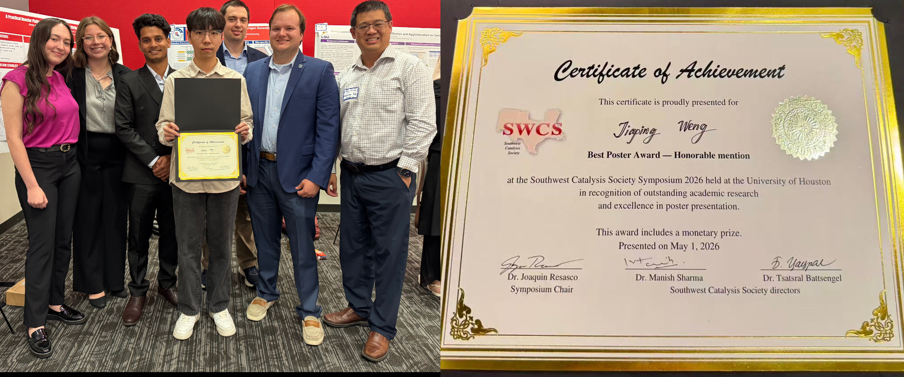
April 2026
Abstracts due by April 8, 2026: Dr. Xiao is organizing the “Hydrocarbon Conversion” session at the 2026 AIChE Annual Meeting, held November 8–12, 2026, in Minneapolis, MN. Abstract submissions are welcome. See link.
March 2026
Abstracts due by March 31, 2026: Dr. Xiao is organizing the “C1 Catalysis” session at the 2026 ACS Fall Meeting, held August 23-27, 2026, in Chicago, IL. Abstract submissions are welcome. See link.
February 2026
Dr. Xiao is honored to present an L. K. Doraiswamy Graduate Seminar in the Department of Chemical and Biological Engineering at Iowa State University on February 26, 2026, entitled “Selective Passivized Catalysis: Balancing Activity, Selectivity, and Stability in Methane Activation.” See link.
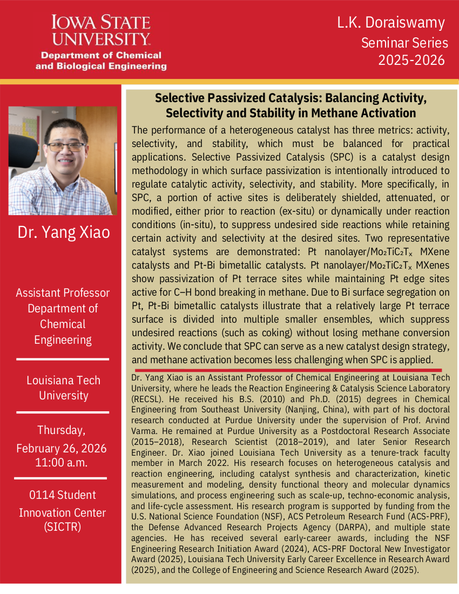
January 2026
•
Our paper has been accepted to publish:
“Thermal Runaway of Chemical Reactors: An Experimental, Modeling, and Machine-Learning Investigation”,
Industrial & Engineering Chemistry Research, 2026, 65, 4, 2057-2070.
PDF |
Link.

December 2025
•
Our Feature Article has been selected as the cover of
Chemical Communications, Vol. 62, Issue 97:
“Non-Oxidative Coupling of Methane via Selective Passivized Catalysis”,
Chemical Communications, 2025, 61, 19183–19194.
PDF |
Link
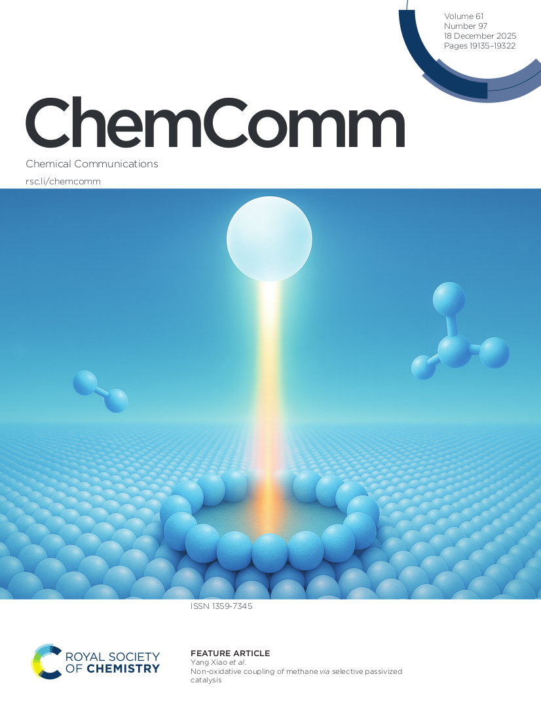
November 2025:
• Dr. Xiao delivered an oral presentation titled “Unraveling the Synergistic Role of Cu(I) and Oxygen Vacancies in CO₂ Hydrogenative Coupling to Ethanol over Cu/CeO₂₋ₓ Catalysts” at the 14th Next-Generation Applications of Nanotechnology for Optimal Sustainability (NANO) Conference, held in San Diego, California, on Saturday, November 8, 2025. See Link.
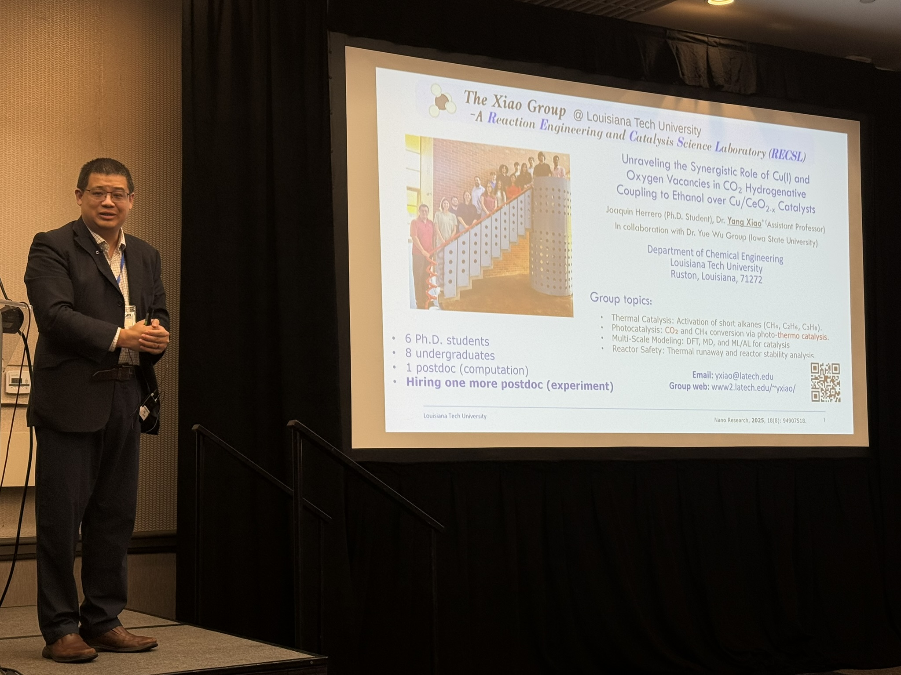
• Dr. Xiao delivered an oral presentation titled “Engineering Reaction–Diffusion Behavior in MXene-Based Catalysts for Ethane Dehydrogenation” at the 2025 AIChE Annual Meeting, held at the Hynes Convention Center (Room 200), Boston, MA, on Monday, November 3. See Link.
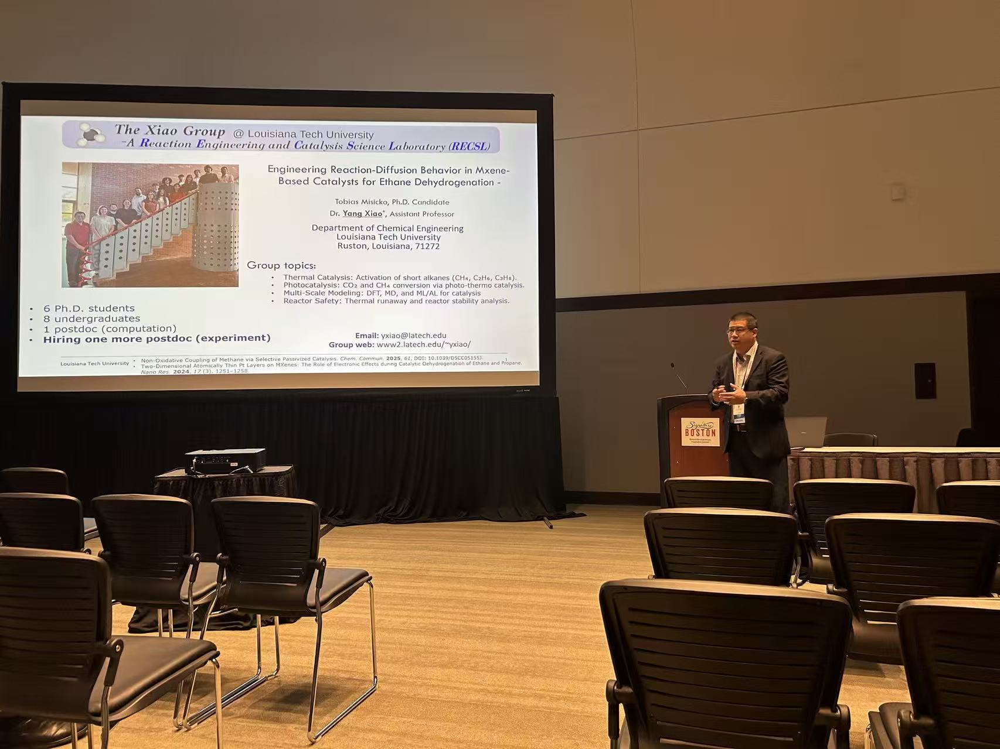
• Dr. Xiao chaired the session “Catalyst Design, Synthesis, and Characterization V: Hydrogenation/Dehydrogenation” at the 2025 AIChE Annual Meeting, held at the Hynes Convention Center (Room 107), Boston, MA, on Wednesday, November 5. See Link.
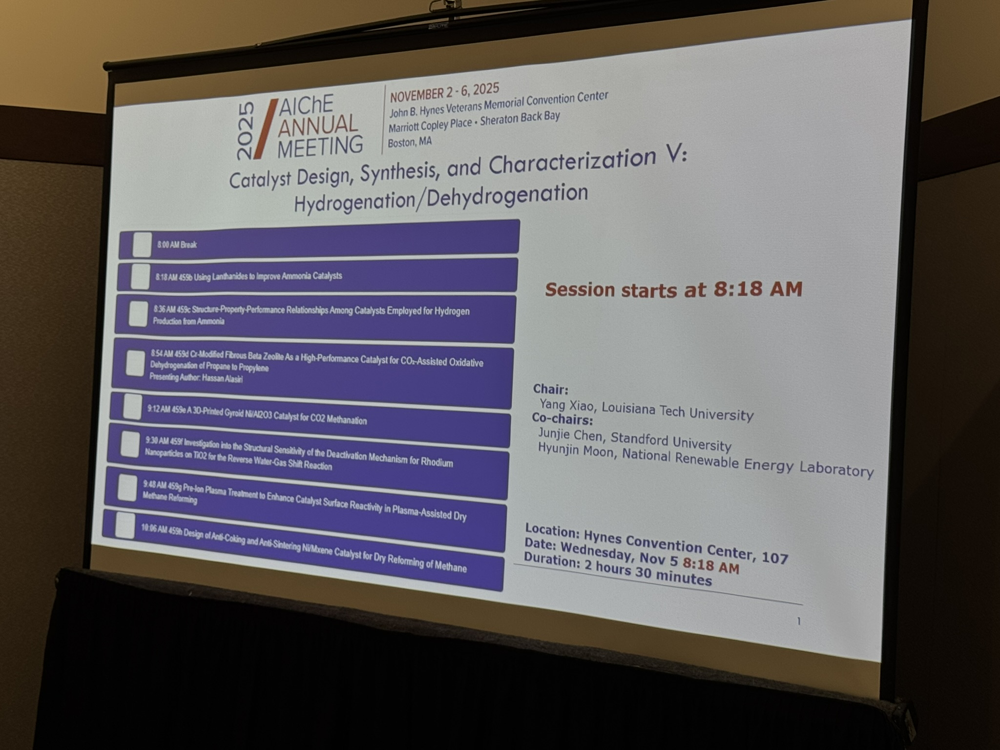
October 2025:
• The Xiao group is pleased to host Dr. Kunlun Ding from LSU’s Cain Department of Chemical Engineering for his seminar, “Interfacial Confinement Effects in Heterogeneous Catalysis,” at Louisiana Tech (LaTech).
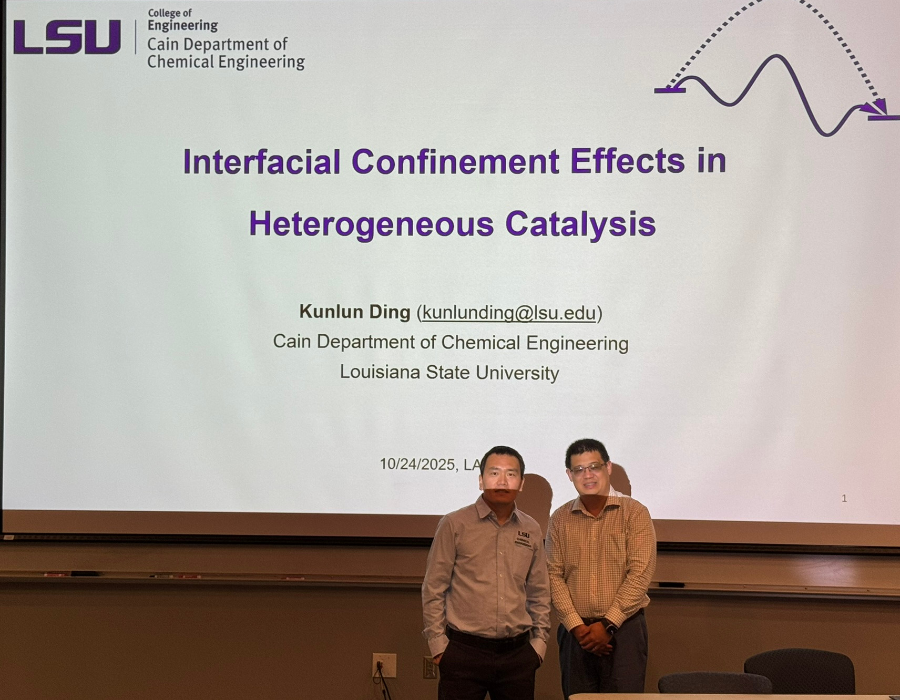
• Our paper titled "Non-oxidative Coupling of Methane via Selective Passivized Catalysis" has been published in the journal of Chemical Communications as a Feature Article: Chemical Communications, 2025, 61, 19183-19194. See Link | PDF.

• Dr. Xiao gives a graduate seminar titled “Process-Oriented Adaptive Multi-Scale Engine for Catalysis and Reaction Engineering (PAME-CARE)” at 4:00 p.m. on Wednesday, October 15, in Room 228 of the IESB Building (201 Mayfield Ave, Ruston, LA).
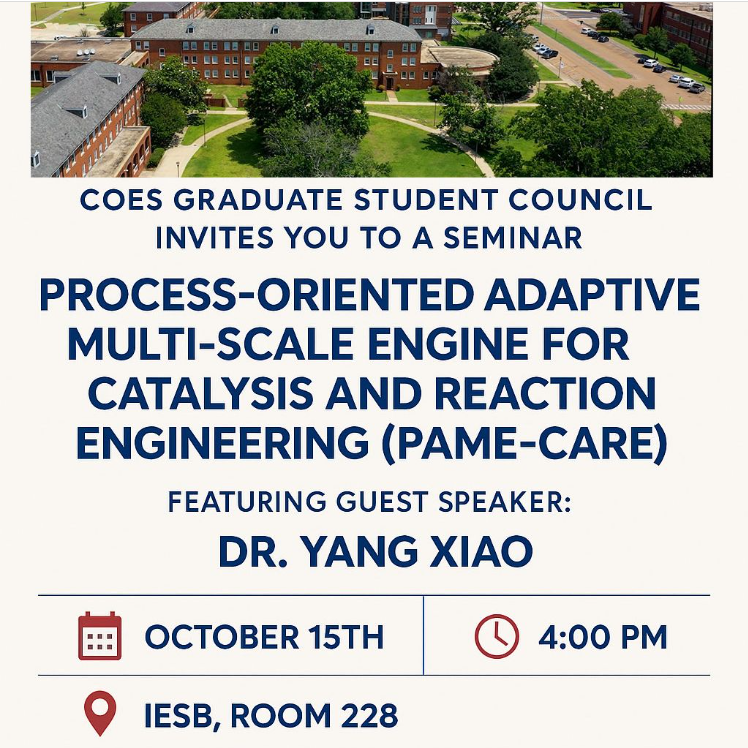
• Great News: The Xiao Group has received another funding from the Defense Advanced Research Projects Agency (DARPA) with a project titled “Adaptive Multi-Physics Engine for Reaction Engineering (AMPERE)". See the full story.
• Congratulations to our undergraduate student, Caroline Cresap, for receiving a $5,000 fellowship from the Louisiana Board of Regents and the Louisiana Materials Design Alliance (LAMDA) under the Supervised Undergraduate Research Experience (SURE) program.
September 2025:
• Great News: The Xiao Group has received funding from the Defense Advanced Research Projects Agency (DARPA) as part of a $5.85 million project titled “Crowded, Heterogeneous, Intracellular, and Multi-Scale Environments for Revolutionary Bio-Applications (CHIMERA)". See the full story.

• The Xiao Group has been awarded a $4,500 grant from the Louisiana Space Grant (LaSPACE) Undergraduate Research Assistantship (LURA) Program to support undergraduate student Ms. Piper Smith in conducting her project, Clean Hydrogen Fuel from Methane for Propulsion Engines.
• Dr. Xiao received the 2025 College of Engineering and Science’s Research Award!
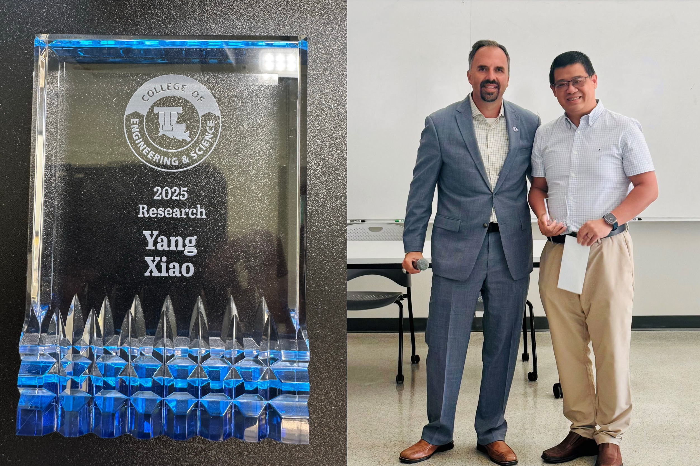
August 2025:
• Our group presented a poster titled “Activation of Short Alkanes via Selective Passivized Catalysis” at the 2025 Great Plains Catalysis Society (GPCS) Symposium, held at Iowa State University.
July 2025:
• Our recent ACS-PRF award is highlighted by Louisiana Tech University. See the link here.

• Great news! Our group has received a new research grant from the Louisiana Materials Design Alliance (LAMDA) to investigate MXene catalysts using density functional theory (DFT) and machine learning (ML). This project will advance fundamental understanding and accelerated discovery of next-generation catalytic materials. Grateful for the support and excited to get started!
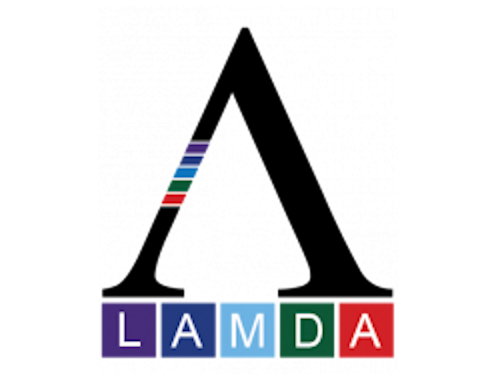
June 2025:
• Our collaborative paper "ToF-SIMS Spectral Analysis of Pristine and Neutron Irradiated Single Crystal Tungsten" is published in the journal of Results in Surfaces and Interfaces, 2025, 20, 100577. PDF | Link
.• The Annual Report of our College of Engineering and Science hightlights our research group. Check the full Annual Report
.
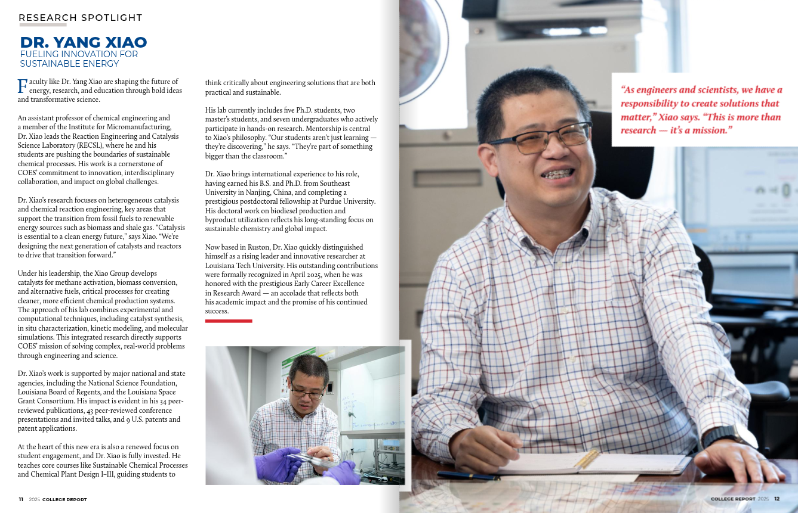
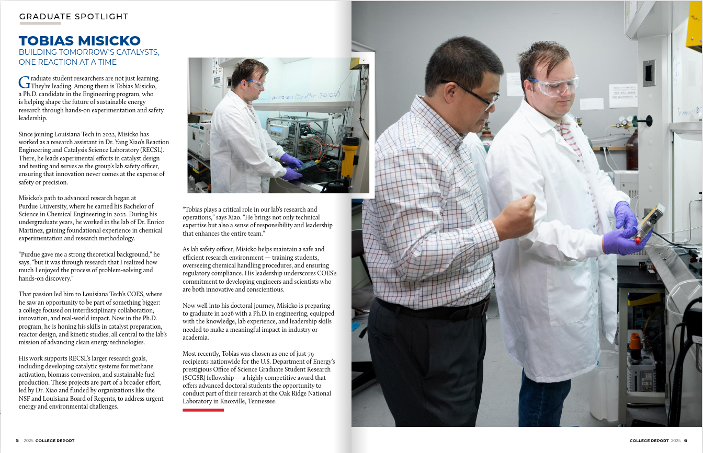
• Dr. Xiao will present our latest research at NAM29 (The 29th North American Catalysis Society Meeting) in Atlanta, GA: "Quantifying Reaction-Diffusion Phenomena of Ethane Dehydrogenation on Two-Dimensional Metal Carbide Catalysts".
• Welcome back, Robert Martin! Robert, who previously contributed to our group as an undergraduate researcher, has rejoined us as a Ph.D. student. We are excited to have him back and look forward to his continued contributions!
• Welcome to our new undergraduate summer interns! We’re excited to have Andres Rodriguez and Natalie Remedies join our group as summer interns. Looking forward to a productive and engaging summer together!
May 2025:
• Great news! We are selected to receive the "Doctoral New Investigator Award" from the American Chemical Society Petroleum Research Fund (ACS-PRF). This prestigious award supports early-career faculty pursuing fundamental research in petroleum-related fields and recognizes our group’s innovative work at the interface of catalysis and reaction engineering. We are honored by this recognition and grateful for the support as we continue to advance transformative research in chemical engineering.
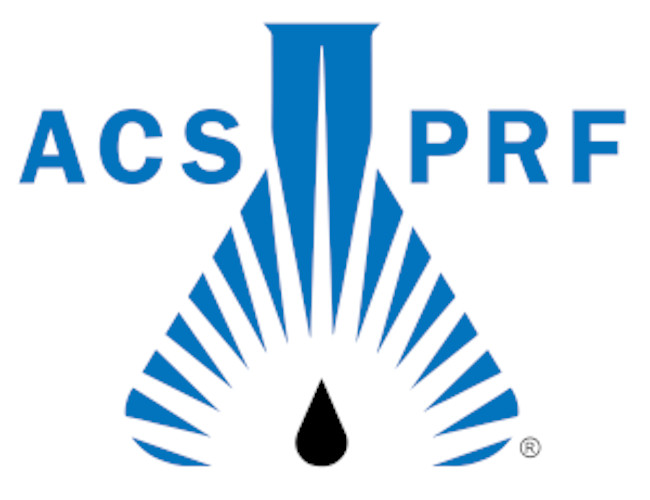
• Congratulations once again to Tobias Misicko on receiving the Philip J. Coane Distinguished Student Award! Established in 2016, this award recognizes excellence in research and scholarly activity by an outstanding IfM graduate student. It also serves to honor the legacy of Mr. Philip J. Coane and his invaluable contributions to the Institute for Micromanufacturing (IfM). Well deserved, Tobias!
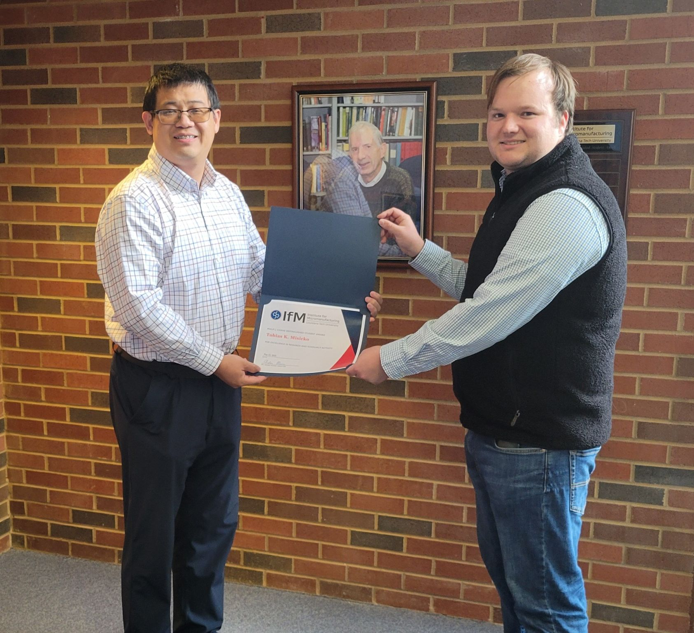
• Congratulations to Tobias Misicko, a third-year Ph.D. candidate, on receiving the U.S. Department of Energy’s (DOE) Office of Science Graduate Student Research (SCGSR) Fellowship! This prestigious award supports outstanding graduate students in conducting part of their thesis research at a DOE national laboratory, in collaboration with a DOE laboratory scientist. Well done, Tobias! Our COES (College of Engineering and Science) reported it here.

• Congratulations to Joaquin Herrero and Jiaping Weng on publishing their first paper, titled "Synergy of Cu(I) and Oxygen Vacancies in CO2 hydrogenative Coupling to Ethanol on Cu/CeO2-x Catalysts" in the journal of Nano Research, 2025, 18(8): 94907518. PDF | Link

April 2025:
• Great news! Our research group has been recognized through Dr. Xiao’s selection as the recipient of
the 2025 Louisiana Tech University Early Career Excellence in Research Award.
This honor reflects the hard work, innovation, and dedication of the entire team. Dr. Xiao is recognized on behalf of the group at a special luncheon on Wednesday, April 23 at 12:30 PM in the Davison Athletics Complex.
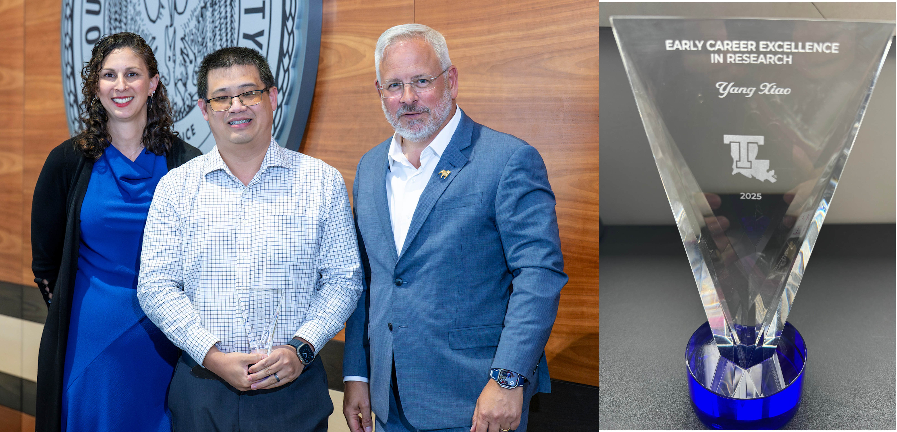
Left: Dr. Jamie Newman, Committee Chair for the award; Right: Dr. Jim Henderson, President of Louisiana Tech University
Check more photos about the luncheon Link.
Check more photos about the group Link.
Check a two-min youtube video here Link.
• Congratulations to Toby (Tobias Misicko) on receiving the prestigious DOE Office of Science Graduate Student Research (SCGSR) award! He will be spending six months at Oak Ridge National Laboratory (ORNL), working in Dr. Xiao-Ying Yu’s lab with the support of the SCGSR program.• Call for Abstracts (Deadline: Monday, April 7, 2025): Dr. Xiao is organizing a session on "Catalysis on Low-Dimensional Materials" at this year’s AIChE Annual Meeting in Boston on November 2-6, 2025! Submit your abstract here: Link
February 2025:
• Dr. Xiao gives an invited talk for graduate students in the Department of Chemical Engineering at the University of Louisiana at Lafayette on February 24th, 2025.
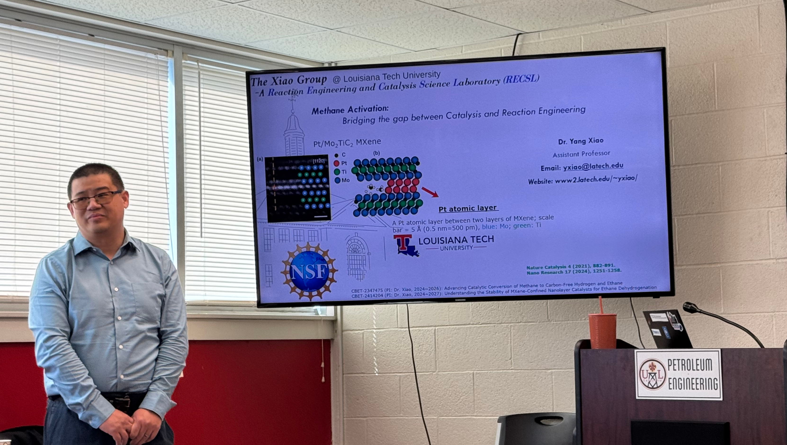
• Our research group presents two oral talks at the NASCRE-5 Conference, taking place at The Westin Galleria Houston (5060 West Alabama, Houston, Texas, USA, 77056). Details of the presentations are as follows.(1) "Quantifying Reaction-Diffusion Rates of Nonoxidative Coupling of Methane per Active Edge Sites of Two-Dimensional Pt Nanolayer Catalysts" at 15:10 - 15:30 pm, Monday, Feb. 17th, 2025. Check it Link
(2) "Machine Learning for Parametric Sensitivity of Chemical Reactors" at 16:30 - 16:50 pm, Tuesday, Feb. 18th, 2025. Link
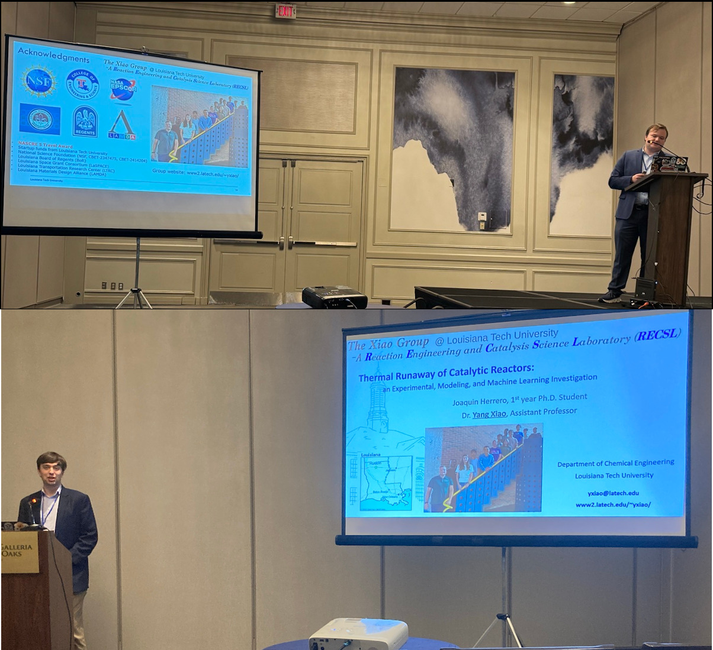
January 2025:
• Our group received a $2,500 Travel Award from the Louisiana Board of Regents to support our participation in the 5th North American Symposium on Chemical Reaction Engineering (NASCRE-5).
• Our user proposal "Imaging Two-dimensional MXene Catalysts Using ToF-SIMS" has been approved by the Center for Nanophase Materials Sciences (CNMS) of Oak Ridge National Laboratory (ORNL). Our group will have 10-day access to AFM/FIB-ToF-SIMS (Atomic Force Microscopy/Focused Ion Beam - Time-of-Flight Secondary Ion Mass Spectrometry) at ORNL.
December 2024:
• In collaboration with Dr. Mingzhou Jin from the University of Tennessee at Knoxville, our paper entitled "Techno-economic Analysis and Network Design for CO2 Conversion to Jet Fuels in the United States" is published in Renewable and Sustainable Energy Reviews. Check it HERE.
• Congratulations to Tobias K. Misicko and Joaquin Herrero on receiving $1,000 each NASCRE 5 Travel Awards to attend the 5th North American Symposium on Chemical Reaction Engineering (NASCRE-5) to be held in Houston on February 16-19, 2025.
• Our College of Engineering and Sciences Faculty Spotlight highlights Dr. Xiao and our research group. See the link here.

•Welcome two undergraduate students join the group: Katherine Cortez and Sabrina Stone. They are both from the Department of Chemical Engineering at Louisiana Tech University.
•Welcome Jacob Robinson join the group as a PhD student! Jacob receives B.S. in Chemical Engineering from Louisiana Tech University.
November 2024:
•Tobias Misicko, a PhD candidate in the Xiao Group, presented a poster "ToF-SIMS Analysis of Two-Dimensional Metal Carbide Catalysts" at the AVS70 conference in Tampa, FL.
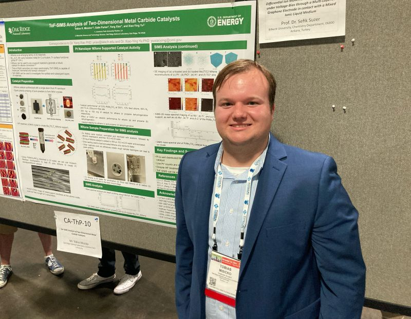
October 2024:
• Congratulations to Henrik Ketting as he has successfully defended his Master's thesis entitled "Techno-Economic Analysis of Waste Plastic Gasification".
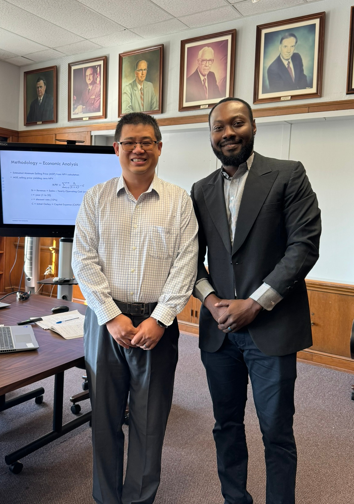
• Dr. Xiao will chair the session of "Catalysis on Low Dimensional Materials" at the 2024 AIChE Annual Meeting, Time: 3:30 PM PT - 6:00 PM PT, Location: San Diego Convention Center, Room 28B, Thursday, October 31, 2024. Check more info here.
• Dr. Xiao will present an oral talk of "Catalytically Active Edge Sites of Mxene-Confined Pt Nanolayers for Conversion of Short Alkanes" at the 2024 AIChE Annual Meeting, Time: 5:18 PM PT - 5:36 PM PT, Location: San Diego Convention Center, Room 28B, Thursday, October 31, 2024. Check more info here.
• Dr. Xiao will present an oral talk of "Thermal Runaway of Chemical Reactors: An Experimental, Modeling Andmachine-Learning Investigation" at the 2024 AIChE Annual Meeting, Time: 9:48 AM - 10:06 AM PT, Location: San Diego Convention Center, Room 28A, Thursday, October 31, 2024. Check more info here.
• We enjoyed attending the Louisiana Space Grant Consortium (LaSPACE) Annual Meeting at Southeastern Louisiana University, Hammond, Louisiana on October 4-5, 2024. Thank my students - Caroline Cresap and Piper Smith for co-presenting a poster! Thank LaSPACE for funding us with two Research Enhancement Awards (REA).
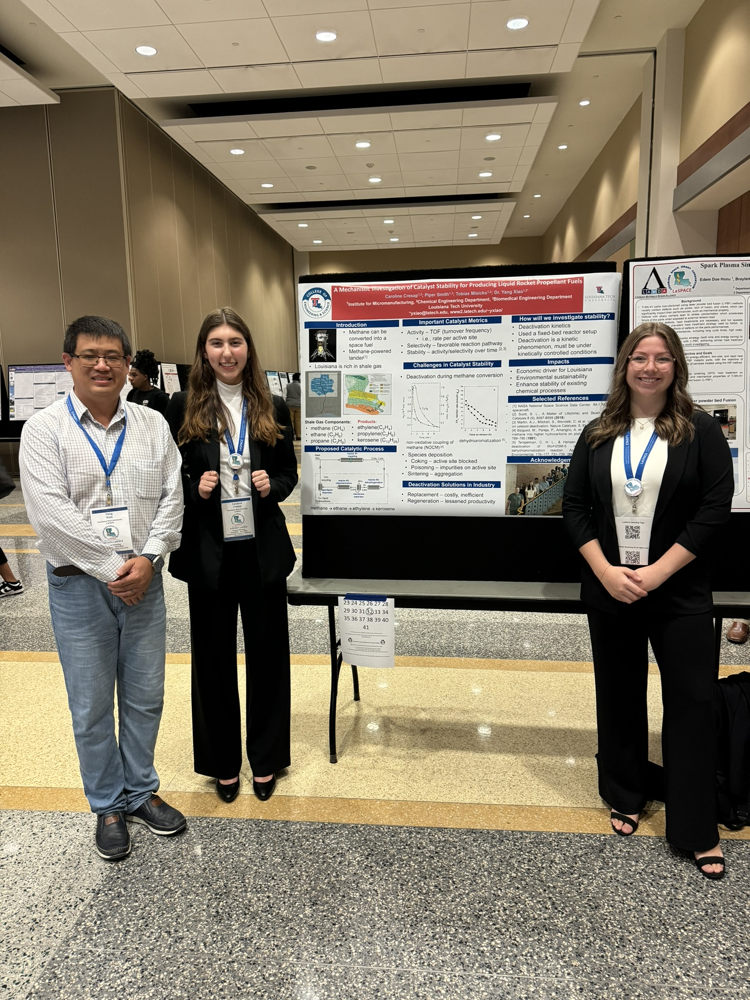
September 2024:
• In collaboration with Dr. Cao from Zhejiang University, our paper entitled "One-pot Synthesis of 5-Norbornene-2,3-Dicarboxylic Anhydride with High Exo/Endo Ratio in a Microreactor under High Temperature and Appropriate Pressure" is published in Chemical Engineering Journal. Check it HERE.
•Welcome four undergraduate students join the group: Gregory Allen, Kaleigh Louque, Suraj Dahal, and Sudip Regmi. They are all from the Department of Chemical Engineering at Louisiana Tech University.
•Welcome Jiaping Weng join the group as a PhD student! Jiaping receives B.S. in Environment Engineering, Changzhou University, Changzhou, China.
•Welcome Kritik Saxena join the group as a PhD student! Kritik is co-advised by Prof. Mainardi. Kritik receives B.S. in Mechanical Engineering, Medicaps Institute of Technology and Management, Indore, India, and M.S. in Manufacturing Technology, National Institute of Technology, Calicut, India.
August 2024:
•Congratulations to Tobias Misicko, the 1st PhD student in the group, for passing his qualifier exams and becoming a PhD candidate.
July 2024:
•More Great News - The Xiao Group, for the second time, received the LAMDA 1B Collaborative Partnership Award from Louisiana Materials Design Alliance (LAMDA) supported by the National Science Foundation under Award No. OIA-1946231 and the Louisiana Board of Regents. This is a $40K one-year project to investigate catalyst stability using both DFT (density functional theory) and MD (Molecular Dynamics) methods.
•Welcome Jacob Robinson to join the group as an undergraduate research assistant.
June 2024:
•Great News - The Xiao Group, for the second time, received the Research Enhancement Award (REA) from Louisiana Space Grant Consortium (LaSPACE, NASA EPSCoR Program). This is a $70K one-year project to conduct catalytic oligomerization of olefins to liquid rocket propellant fuels.
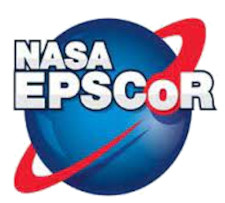
•Great News - The Xiao Group received a second grant this year from the National Science Foundation (NSF). It is funded by the Catalysis program from the Division of Chemical, Bioengineering, Environmental and Transport Systems (CBET). This is a $336K three-year project to convert ethane to ethylene and hydrogen. The project conneccts the former NSF ERI project (link), in which methane is converted to ethane and carbon-free hydrogen. Check more info here.
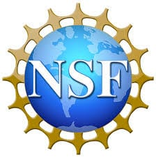
May 2024:
• Our group is highlighted in the College's press release - "Xiao wins prestigious NSF grant to convert shale gas into clean energy". Check more info here. Check the NSF award here.

• Congratulations to Piper Smith on receiving a $5,000 scholarship from the ACS (American Chemistry Society) SEED project.
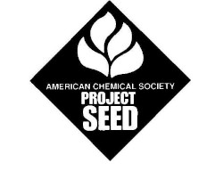
• Our LTRC TIRE grant (Louisiana Transportation Research Center - Transportation Innovation for Research Exploration grant) and the research group are highlighted in Louisiana Tech University's press release as "Xiao awarded funding for energy sustainability research through TIRE grant". Check more info here.
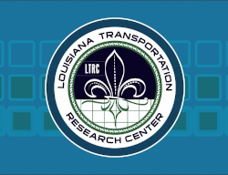
•Great News - The Xiao Group has received the Engineering Research Initiation (ERI) Award from the National Science Foundation (NSF). It is funded by the Catalysis program from the Division of Chemical, Bioengineering, Environmental and Transport Systems (CBET). This is a $200K two-year project to convert methane, the primary component of Louisiana's shale gas, to ethane and carbon-free hydrogen. Ethane can be used to produce ethylene, a precursor of polyethylene plastics. Hydrogen is a clean fuel, and its burning does not produce CO2 thus easing global warming. In addition, we will build a steady-state isotopic transient kinetic analysis - operando transmission Fourier-transform infrared spectroscopy (SSITKA-FTIR) in a single flow reactor to investigate catalytic mechanisms under working conditions. Check more info here.